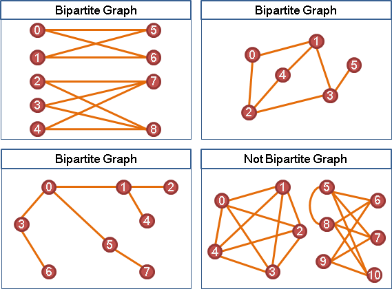
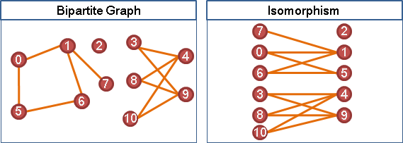
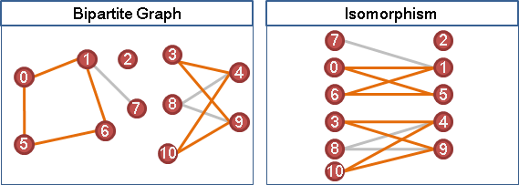
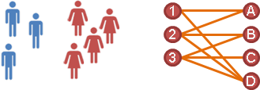
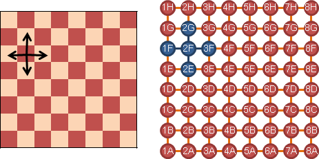
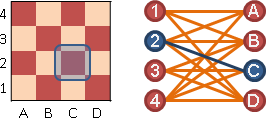
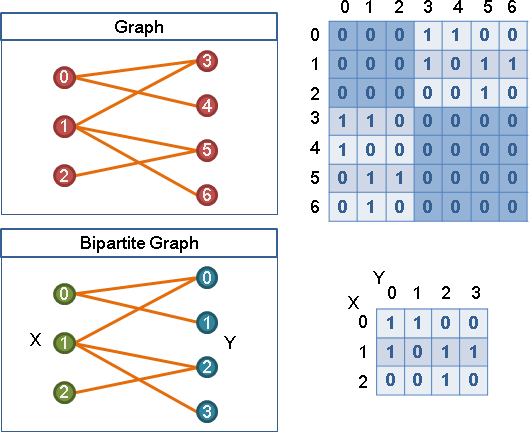
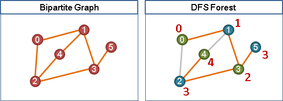

Bipartite Graph
Bipartite Graph
「二分圖」。可以分成兩群點，兩群點之間有邊，兩群點內部無邊。
二分圖可以重新繪製，讓所有點分成左右兩側，只有左右之間有邊。通常有許多種分法。
二分圖沒有奇環（奇數條邊的環）、只有偶環（偶數條邊的環）。沿著邊走，一往一返，必為偶數。
樹、有向無環圖沒有環，二分圖則是沒有奇環。二分圖也是十分重要的特例，往往存在速度極快的演算法，例如「Matching」以及「Vertex Cover」的演算法。
Directed Bipartite Graph
「有向二分圖」鮮少討論。
現實生活當中的Bipartite Graph
現實生活有許多圖是二分圖。
配對的概念：男生女生聯誼配對，是二分圖。運動比賽兩隊人馬對決，是二分圖。鬼腳圖，是二分圖。一個蘿蔔一個坑，是二分圖。
輪替的概念：西洋棋盤，點是格子，邊是上下左右相鄰關係，黑格白格形成二分圖；邊是八方向相鄰，則不是二分圖。國王移動，是二分圖。騎士移動，是二分圖。
交叉的概念：西洋棋盤，點是行列，邊是格子，是二分圖。兩層迴圈，是二分圖。
Bipartite Graph資料結構
當資料結構是adjacency matrix，可以進行精簡。就這樣。
Bipartite Graph Recognition
檢查一張圖是不是二分圖，方法很簡單：確認圖上是否有奇環，沒有奇環就是二分圖。
把圖重新畫成樹的形狀，就容易找環了！把圖重新畫成樹的形狀，利用Graph Traversal即可，無論是DFS或BFS都行！
在樹上標記深度。然後檢查圖上每一條邊，看看端點是否一奇一偶，就能判斷是否有奇環。
最後有件事值得一提。確認一張圖只有偶環、沒有奇環（二分圖），是P問題，有著快速的演算法。確認一張圖沒有偶環、只有奇環，卻是NP-complete問題，目前沒有快速的演算法。非常不可思議！